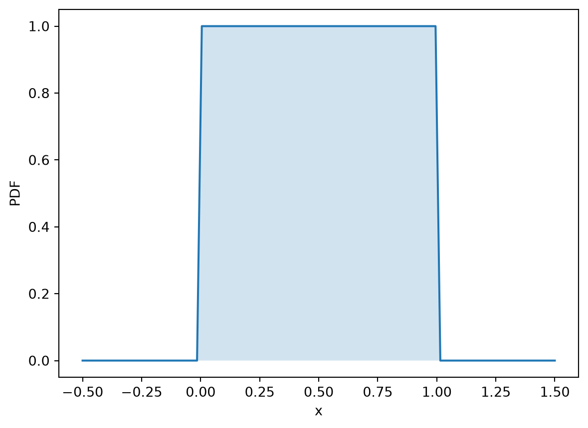

In this section, we will discuss several common probability distributions that are frequently used in finance and statistics. Discrete distributions include the Bernoulli, Binomial, Geometric, and Poisson distributions. Continuous distributions include the Uniform, Exponential, Normal, and Lognormal distributions. Each distribution has its own characteristics and applications, which we will explore in detail.
6.1 Bernoulli
The Bernoulli distribution is the probability model for a single yes/no experiment. It is the smallest nontrivial discrete distribution: one outcome is coded as \(1\), usually called success, and the other is coded as \(0\), usually called failure. In finance, the words “success” and “failure” are just labels. A “success” might mean default, a trade executing, an option ending in the money, or a stock moving up over one period.
Definition 6.1 Let \(0 \le p \le 1\). A random variable \(X\) has a Bernoulli distribution with parameter \(p\), written \[
X \sim \operatorname{Bernoulli}(p),
\] if \(X\) takes values in \(\{0,1\}\) and \[
\mathbb{P}(X=1)=p, \qquad \mathbb{P}(X=0)=1-p.
\] The parameter \(p\) is the probability of the event coded by \(1\).
It is easy to see that, for \(x \in \{0,1\}\), the probability mass function is \[
p_X(x)=\mathbb{P}(X=x)=p^x(1-p)^{1-x}.
\] This compact formula works because if \(x=1\), it gives \(p\); if \(x=0\), it gives \(1-p\).
The cumulative distribution function is the step function \[
F_X(x)=
\begin{cases}
0, & x < 0,\\
1-p, & 0 \le x < 1,\\
1, & x \ge 1.
\end{cases}
\]
The moments of Bernoulli random variables are simple to compute. Because \(X\) only takes the values \(0\) and \(1\), powers of \(X\) are especially simple: \[
X^k = X \qquad \text{for every integer } k \ge 1.
\] Therefore, \[
\mathbb{E}[X^k]=p, \qquad k=1,2,\dots .
\] In particular, the expectation and variance are \[
\mathbb{E}[X]=p,
\] and \[
\operatorname{Var}(X)
=\mathbb{E}[X^2]-\mathbb{E}[X]^2
=p-p^2
=p(1-p).
\] The variance is largest when \(p=1/2\) and equals zero when \(p=0\) or \(p=1\). This matches the intuition: uncertainty is highest when the two outcomes are equally likely, and disappears when the outcome is certain.
6.2 Binomial
The Binomial distribution counts how many successes occur in a fixed number of independent Bernoulli trials. If a Bernoulli random variable models one yes/no event, then a Binomial random variable models the total number of yes answers after repeating the experiment \(n\) times.
Definition 6.2 Let \(n\) be a positive integer and let \(0 \le p \le 1\). A random variable \(X\) has a Binomial distribution with parameters \(n\) and \(p\), written \[
X \sim \operatorname{Binomial}(n,p),
\] if \(X\) takes values in \(\{0,1,\dots,n\}\) and \[
\mathbb{P}(X=k)=\binom{n}{k}p^k(1-p)^{n-k},
\qquad k=0,1,\dots,n.
\] Here \(n\) is the number of trials and \(p\) is the success probability in each trial.
The Binomial distribution asks what the probability is of getting exactly \(k\) successes in \(n\) independent trials, each with success probability \(p\).
The Binomial distribution is built from Bernoulli variables. If \[
X_1,\dots,X_n \stackrel{\text{iid}}{\sim} \operatorname{Bernoulli}(p),
\] where “iid” means independent and identically distributed, then \[
X=\sum_{i=1}^n X_i \sim \operatorname{Binomial}(n,p).
\]
This representation is usually the easiest way to remember its moments. The expectation is \[
\mathbb{E}(X)
=\mathbb{E}\left(\sum_{i=1}^n X_i\right)
=\sum_{i=1}^n \mathbb{E}(X_i)
=np.
\] Because the Bernoulli trials are independent, the variance is \[
\operatorname{Var}(X)
=\operatorname{Var}\left(\sum_{i=1}^n X_i\right)
=\sum_{i=1}^n \operatorname{Var}(X_i)
=np(1-p).
\] Here we have used the fact that the variance of a sum of independent random variables is the sum of their variances, even though we mentioned that variance is not linear in general.
One useful property is additivity. If \(X\sim\operatorname{Binomial}(n,p)\), \(Y\sim\operatorname{Binomial}(m,p)\), and \(X\) and \(Y\) are independent, then \[
X+Y\sim\operatorname{Binomial}(n+m,p).
\] Combining two independent blocks of trials gives one larger block of trials.
6.3 Geometric
The Geometric distribution models the waiting time until the first success in repeated independent Bernoulli trials. If the Binomial distribution asks “how many successes occur in \(n\) trials?”, the Geometric distribution asks “how long do we wait until the first success?”
There are two common conventions. In these notes, we use the convention that \(X\) is the number of trials until the first success, so \(X\) takes values in \(\{1,2,3,\dots\}\).
Definition 6.3 Let \(0<p\le 1\). A random variable \(X\) has a Geometric distribution with parameter \(p\), written \[
X\sim\operatorname{Geometric}(p),
\] if \[
\mathbb{P}(X=k)=(1-p)^{k-1}p,
\qquad k=1,2,3,\dots .
\] Here \(p\) is the success probability in each independent trial.
The formula is easy to read. The event \(\{X=k\}\) means that the first \(k-1\) trials are failures and the \(k\)th trial is the first success: \[
\underbrace{0,\dots,0}_{k-1\text{ failures}},1.
\] Because the trials are independent, the probability of this pattern is \[
(1-p)^{k-1}p.
\]
The cumulative distribution function is \[
F_X(k)=\mathbb{P}(X\le k)=1-(1-p)^k,
\qquad k=1,2,3,\dots .
\] This is because \(\{X>k\}\) means that the first \(k\) trials all fail, so \[
\mathbb{P}(X>k)=(1-p)^k.
\]
We can derive the expectation from the PMF. \[
\begin{aligned}
\mathbb{E}(X)
&=\sum_{k=1}^{\infty} k\,\mathbb{P}(X=k)\\
&=\sum_{k=1}^{\infty} k(1-p)^{k-1}p \\
&=p\sum_{k=1}^{\infty} k (1-p)^{k-1}
\end{aligned}
\] By geometric series summation, We know that \(\sum_{k=1}^{\infty} (1-p)^k = \frac{1-p}{p}\). Take the derivative with respect to \((1-p)\) to get \[
\frac{d}{d(1-p)}\left(\sum_{k=1}^{\infty} (1-p)^k\right) = \frac{d}{d(1-p)}\left(\frac{1-p}{p}\right)
\quad \Rightarrow \quad
\sum_{k=1}^{\infty} k (1-p)^{k-1} = \frac{1}{p^2}.
\] Plugging this back into the expectation formula, we have \[
\mathbb{E}(X) = \frac{1}{p}.
\] This says that when success is rare, the expected waiting time is long. For example, if \(p=0.02\), then the expected number of trials until the first success is \(1/0.02=50\).
The variance can be derived similarly but more complicatedly, so we will not derive it here. The result is \[
\operatorname{Var}(X)=\frac{1-p}{p^2}.
\]
The most important property of the Geometric distribution is memorylessness. For integers \(m,n\ge 0\), \[
\mathbb{P}(X>m+n\mid X>m)=\mathbb{P}(X>n).
\] Indeed, \[
\mathbb{P}(X>m+n\mid X>m)
=\frac{\mathbb{P}(X>m+n)}{\mathbb{P}(X>m)}
=\frac{(1-p)^{m+n}}{(1-p)^m}
=(1-p)^n
=\mathbb{P}(X>n).
\] Intuitively, if no success has occurred yet, the waiting time starts over. Past failures do not change the probability of success in the next independent trial.
6.4 Poisson
The Poisson distribution models the number of times an event occurs in a fixed interval of time. It is especially useful for counting rare events: defaults in a portfolio, or jumps in an asset price.
Definition 6.4 Let \(\lambda>0\). A random variable \(X\) has a Poisson distribution with parameter \(\lambda\), written \[
X\sim\operatorname{Poisson}(\lambda),
\] if \(X\) takes values in \(\{0,1,2,\dots\}\) and \[
\mathbb{P}(X=k)=e^{-\lambda}\frac{\lambda^k}{k!},
\qquad k=0,1,2,\dots .
\]
Poisson distribution asks the question: “what is the probability of observing exactly \(k\) events in a unit of time?” We will see that \(\lambda\) is the expected number of events in that time interval.
The expectation is \[
\begin{aligned}
\mathbb{E}(X)
&=\sum_{k=0}^{\infty}k\,\mathbb{P}(X=k)\\
&=\sum_{k=1}^{\infty}k e^{-\lambda}\frac{\lambda^k}{k!}\\
&=e^{-\lambda}\sum_{k=1}^{\infty}\frac{\lambda^k}{(k-1)!}\\
&=\lambda e^{-\lambda}\sum_{k=1}^{\infty}\frac{\lambda^{k-1}}{(k-1)!}.
\end{aligned}
\] The summation part \(\sum_{k=1}^{\infty}\frac{\lambda^{k-1}}{(k-1)!}\) is the Taylor series for \(e^{\lambda}\) at \(\lambda=0\)\[
e^{\lambda}= 1 + \frac{\lambda}{1!} + \frac{\lambda^2}{2!} + \frac{\lambda^3}{3!} + \dots
\] Therefore, the expectation simplifies to \[
\mathbb{E}(X) =\lambda e^{-\lambda}e^\lambda =\lambda.
\]
The variance can be derived similarly, \[
\begin{aligned}
\mathbb{E}(X^2)
&=\sum_{k=0}^{\infty}k^2\,\mathbb{P}(X=k)\\
&=\sum_{k=1}^{\infty}k^2 e^{-\lambda}\frac{\lambda^k}{k!}\\
&=\lambda e^{-\lambda}\sum_{k=1}^{\infty}k\frac{\lambda^{k-1}}{(k-1)!}\\
\end{aligned}
\] Note that the summation part \[
\sum_{k=1}^{\infty}k\frac{\lambda^{k-1}}{(k-1)!} = 1 + 2\frac{\lambda}{1!} + 3\frac{\lambda^2}{2!} + 4\frac{\lambda^3}{3!} + \dots = \frac{d(\lambda e^{\lambda})}{d\lambda} = (1+\lambda)e^{\lambda}.
\] Plugin this back into the expectation formula, we have \[
\mathbb{E}(X^2) = \lambda e^{-\lambda}(1+\lambda)e^{\lambda} = \lambda(1+\lambda).
\] Therefore, the variance is \[
\operatorname{Var}(X) = \mathbb{E}(X^2)-\mathbb{E}(X)^2 = \lambda(1+\lambda)-\lambda^2 = \lambda.
\] This means that the variance of a Poisson distribution is equal to its mean.
One useful property is additivity. If \(X\sim\operatorname{Poisson}(\lambda_1)\), \(Y\sim\operatorname{Poisson}(\lambda_2)\), and \(X\) and \(Y\) are independent, then \[
X+Y\sim\operatorname{Poisson}(\lambda_1+\lambda_2).
\] Combining independent event counts adds the arrival rates.
The Poisson distribution also arises as a limit of the Binomial distribution. Suppose \[
X_n\sim\operatorname{Binomial}(n,p_n),
\] where \(n\) is large, \(p_n\) is small, and \(np_n\to\lambda\). Then \[
X_n \to \operatorname{Poisson}(\lambda)
\] in distribution. Intuitively, a large number of tiny independent chances can produce a Poisson count.
6.5 Uniform
The Uniform distribution is the simplest continuous distribution on an interval. It assigns equal density to every point between two endpoints \(a\) and \(b\). In this sense, it is the continuous analogue of “all outcomes are equally likely,” although for a continuous random variable the probability of any single point is still zero.
Definition 6.5 Let \(a<b\). A random variable \(X\) has a Uniform distribution on \([a,b]\), written \[
X\sim\operatorname{Uniform}(a,b),
\] if its probability density function is \[
f_X(x)=
\begin{cases}
\dfrac{1}{b-a}, & a\le x\le b,\\
0, & \text{otherwise}.
\end{cases}
\]
Code
import numpy as npimport matplotlib.pyplot as plt# Plot the PDF of a Uniform(0,1) distributionx = np.linspace(-0.5, 1.5, 100)pdf = np.where((x >=0) & (x <=1), 1, 0)plt.plot(x, pdf, label='PDF of Uniform(0,1)')plt.fill_between(x, pdf, alpha=0.2)plt.xlabel('x')plt.ylabel('PDF')plt.show()

Question: What is the area under the curve of the PDF of a Uniform\((a,b)\) distribution? The height of the density is \(1/(b-a)\) because the total area under the density must be one: \[
\int_a^b \frac{1}{b-a}\,dx=1.
\] Actually, for any continuous random variable, the total area under the PDF must be one. This is because the total probability of all possible outcomes must equal one.
For any subinterval \([c,d]\subseteq [a,b]\), \[
\mathbb{P}(c\le X\le d)
=\int_c^d \frac{1}{b-a}\,dx
=\frac{d-c}{b-a}.
\] Thus, probabilities are proportional to lengths of intervals.
The cumulative distribution function is \[
F_X(x)=
\begin{cases}
0, & x<a,\\
\dfrac{x-a}{b-a}, & a\le x\le b,\\
1, & x>b.
\end{cases}
\] Between \(a\) and \(b\), the CDF is a straight line because probability accumulates at a constant rate.
The expectation is \[
\begin{aligned}
\mathbb{E}(X)
&=\int_{-\infty}^{\infty} x f_X(x)\,dx\\
&=\int_a^b x\frac{1}{b-a}\,dx\\
&=\frac{1}{b-a}\frac{x^2}{2}\Big|_a^b\\
&=\frac{a+b}{2}.
\end{aligned}
\] So the mean is the midpoint of the interval.
To compute the variance, first compute the second moment: \[
\begin{aligned}
\mathbb{E}(X^2)
&=\int_a^b x^2\frac{1}{b-a}\,dx\\
&=\frac{1}{b-a}\frac{x^3}{3}\Big|_a^b\\
&=\frac{b^3-a^3}{3(b-a)}\\
&=\frac{a^2+ab+b^2}{3}.
\end{aligned}
\] Therefore, \[
\begin{aligned}
\operatorname{Var}(X)
&=\mathbb{E}(X^2)-[\mathbb{E}(X)]^2\\
&=\frac{a^2+ab+b^2}{3}-\left(\frac{a+b}{2}\right)^2\\
&=\frac{(b-a)^2}{12}.
\end{aligned}
\]
A useful transformation property is that every Uniform\((a,b)\) random variable can be generated from a Uniform\((0,1)\) random variable. If \[
U\sim\operatorname{Uniform}(0,1),
\] then \[
X=a+(b-a)U\sim\operatorname{Uniform}(a,b).
\]
Example 6.1 (Levered project payoff) Suppose a project requires an initial investment of $100 and has a random payoff \(R\) that is uniformly distributed between $50 and $160. An investor has $50 in cash and can borrow the remaining $50 with no interest. After the project is completed, the investor repays the loan and keeps any remaining payoff.
What is the expected payoff to the investor after debt repayment?
What is the expected payoff to the investor if \(R\sim \operatorname{Uniform}(30,180)\)?
In this problem, we know the random variable \(R\). We need to express the investor’s payoff as a function of \(R\), so that we can compute its expectation using \[
\mathbb{E}[f(R)] = \int f(r) f_R(r)\,dr.
\] Denote the investor’s payoff by \(P\).
In Q1, the project payoff is always at least $50, so the investor can always repay the loan. Thus, \[
P = R - 50.
\] The expected payoff is \[
\mathbb{E}[P]
=\mathbb{E}[R-50]
=\mathbb{E}[R]-50
=\frac{50+160}{2}-50
=55.
\]
In Q2, it is possible that the project payoff is less than $50. In that case, the investor defaults on the loan and receives zero after debt repayment. Therefore, the investor’s payoff is \[
P = \max(R-50, 0).
\] The expected payoff is \[
\begin{aligned}
\mathbb{E}[P]
&= \mathbb{E}[\max(R-50, 0)]\\
&= \int_{30}^{180} \max(r-50, 0) f_R(r) dr\\
&= \int_{50}^{180} (r-50) \frac{1}{180-30} dr\\
&= \frac{1}{150} \frac{(r-50)^2}{2}\Big|_{50}^{180}\\
&= 56.333
\end{aligned}
\]
In Q1, \(\mathbb{E}(R)=105\) and \[
\operatorname{Var}(R)=\frac{(160-50)^2}{12}=1008.333.
\] In Q2, \(\mathbb{E}(R)=105\) again, but \[
\operatorname{Var}(R)=\frac{(180-30)^2}{12}=1875.
\] The two projects have the same expected payoff before debt repayment, but the second project has higher variance. Because the investor has limited liability, the downside below $50 is partly absorbed by the lender, while the investor keeps the upside. This is why the expected payoff to the investor is higher in Q2. Formally, \(\max(R-50,0)\) is a convex function of \(R\), so Jensen’s inequality gives \[
\mathbb{E}[\max(R-50, 0)] \ge \max(\mathbb{E}[R]-50, 0) = 55.
\] In finance, this phenomenon is called risk shifting.
6.6 Normal
The Normal distribution is the most important continuous distribution in statistics and finance. It is the familiar bell-shaped distribution, symmetric around its mean. It appears in many places because sums and averages of many small independent shocks are often approximately Normal, even when the individual shocks are not Normal.
Definition 6.6 Let \(\mu\in\mathbb{R}\) and \(\sigma>0\). A random variable \(X\) has a Normal distribution with mean \(\mu\) and variance \(\sigma^2\), written \[
X\sim\mathcal{N}(\mu,\sigma^2),
\] if its probability density function is \[
f_X(x)
=\frac{1}{\sqrt{2\pi}\sigma}
\exp\left(-\frac{(x-\mu)^2}{2\sigma^2}\right),
\qquad x\in\mathbb{R}.
\]
The expectation and variance of a Normal random variable are \[
\mathbb{E}(X)=\mu,
\qquad
\operatorname{Var}(X)=\sigma^2.
\]
The special case \[
Z\sim\mathcal{N}(0,1)
\] is called the standard Normal distribution. Its density is \[
\phi(z)=\frac{1}{\sqrt{2\pi}}\exp\left(-\frac{z^2}{2}\right).
\] Its cumulative distribution function is denoted by \[
\Phi(z)=\mathbb{P}(Z\le z)=\int_{-\infty}^z \phi(t)\,dt.
\] There is no elementary closed-form expression for \(\Phi(z)\), so we usually evaluate it using a table, a calculator, or software.
Any Normal random variable can be standardized. If \[
X\sim\mathcal{N}(\mu,\sigma^2),
\] then \[
Z=\frac{X-\mu}{\sigma}\sim\mathcal{N}(0,1).
\] Therefore, \[
\mathbb{P}(X\le x)
=\mathbb{P}\left(\frac{X-\mu}{\sigma}\le \frac{x-\mu}{\sigma}\right)
=\Phi\left(\frac{x-\mu}{\sigma}\right).
\] Standardization is useful because it reduces probability calculations for any Normal distribution to probability calculations for the standard Normal distribution.
The Normal distribution has several useful properties.
Symmetry. If \(X\sim\mathcal{N}(\mu,\sigma^2)\), then the density is symmetric around \(\mu\). In particular, \[
\mathbb{P}(X\le \mu)=\mathbb{P}(X\ge \mu)=\frac{1}{2}.
\]
Linear transformations. If \[
X\sim\mathcal{N}(\mu,\sigma^2),
\] and \(a,b\) are constants with \(b\ne 0\), then \[
a+bX\sim\mathcal{N}(a+b\mu,b^2\sigma^2).
\] To remember this, just think about how the mean and variance change under linear transformations. \[
\mathbb{E}(a+bX)=a+b\mathbb{E}(X)=a+b\mu,
\qquad
\operatorname{Var}(a+bX)=b^2\operatorname{Var(X)}=b^2\sigma^2.
\]
Sums of independent Normals. If \(X\) and \(Y\) are independent with \[
X\sim\mathcal{N}(\mu_X,\sigma_X^2),
\qquad
Y\sim\mathcal{N}(\mu_Y,\sigma_Y^2),
\] then \[
X+Y\sim\mathcal{N}(\mu_X+\mu_Y,\sigma_X^2+\sigma_Y^2) \qquad X-Y\sim\mathcal{N}(\mu_X-\mu_Y,\sigma_X^2+\sigma_Y^2).
\] More generally, a linear combination of independent Normal random variables is Normal. Again, we can remember this by thinking about how the mean and variance change under linear combinations. If \(X_1,\dots,X_n\) are independent with \[
X_i\sim\mathcal{N}(\mu_i,\sigma_i^2),
\] then for constants \(a_1,\dots,a_n\), \[
\sum_{i=1}^n a_i X_i \sim \mathcal{N}\left(\sum_{i=1}^n a_i \mu_i, \sum_{i=1}^n a_i^2 \sigma_i^2\right).
\] This is a key property of the Normal distribution, which makes it very useful in many applications.
6.7 Lognormal
Definition 6.7 Let \(\mu\in\mathbb{R}\) and \(\sigma>0\). A positive random variable \(X\) has a Lognormal distribution with parameters \(\mu\) and \(\sigma^2\), written \[
X\sim\operatorname{Lognormal}(\mu,\sigma^2),
\] if \[
\log X \sim \mathcal{N}(\mu,\sigma^2).
\] Equivalently, if \(Z\sim\mathcal{N}(0,1)\), then \[
X=e^{\mu+\sigma Z}
\] has a Lognormal\((\mu,\sigma^2)\) distribution.
Notice carefully that \(\mu\) and \(\sigma^2\) are the mean and variance of \(\log X\), not the mean and variance of \(X\). That is, \[
\mathbb{E}(\log X)=\mu,
\qquad
\operatorname{Var}(\log X)=\sigma^2.
\] The mean and variance of \(X\) itself are \[
\mathbb{E}(X)=e^{\mu+\sigma^2/2},
\qquad
\operatorname{Var}(X)=e^{2\mu+\sigma^2}\left(e^{\sigma^2}-1\right).
\]
To compute the expectation, write \(X=e^Y\) where \(Y\sim\mathcal{N}(\mu,\sigma^2)\). Then \[
\mathbb{E}(X)=\mathbb{E}(e^Y)=\int_{-\infty}^{+\infty}e^y\frac{1}{\sigma\sqrt{2\pi}}e^{-\frac{1}{2}(\frac{y-\mu}{\sigma})^2}\,dy
\] let \(t = \frac{y-\mu}{\sigma} \in (-\infty,+\infty)\), then $y = t + $ \[
\begin{aligned}
\mathbb{E}(e^Y)
& = \int_{-\infty}^{+\infty}e^{\sigma t + \mu} \frac{1}{\sqrt{2\pi}}e^{-\frac{1}{2}t^2}\,dt \\
& = e^{\mu}\int_{-\infty}^{+\infty}e^{\sigma t} \frac{1}{\sqrt{2\pi}}e^{-\frac{1}{2}t^2}\,dt \\
& = e^{\mu}\int_{-\infty}^{+\infty} \frac{1}{\sqrt{2\pi}}e^{-\frac{1}{2}((t-\sigma)^2-\sigma^2)}\,dt \\
& = e^{\mu + \frac{\sigma^2}{2}}\int_{-\infty}^{+\infty} \frac{1}{\sqrt{2\pi}}e^{-\frac{1}{2}(t-\sigma)^2}\,d(t-\sigma) \\
& = e^{\mu + \frac{\sigma^2}{2}}
\end{aligned}
\]
Similarly, since \(2Y\sim\mathcal{N}(2\mu,4\sigma^2)\), we have \[
\mathbb{E}(X^2)=\mathbb{E}(e^{2Y})=e^{2\mu+2\sigma^2}.
\] Therefore, \[
\begin{aligned}
\operatorname{Var}(X)
&=\mathbb{E}(X^2)-[\mathbb{E}(X)]^2\\
&=e^{2\mu+2\sigma^2}-e^{2\mu+\sigma^2}\\
&=e^{2\mu+\sigma^2}\left(e^{\sigma^2}-1\right).
\end{aligned}
\]
The median of a Lognormal random variable is \[
\operatorname{median}(X)=e^\mu.
\] This follows because \[
\mathbb{P}(X\le e^\mu)
=\mathbb{P}(\log X\le \mu)
=\frac{1}{2}.
\]
The Lognormal distribution is used for positive random variables. A Normal random variable can take any real value, including negative values. A Lognormal random variable, by contrast, is always positive because it is obtained by exponentiating a Normal random variable.
For example, suppose the stock price is \(S_t\) at time \(t\), and \(S_{t+1}\) at time \(t+1\). The total return is \[
R_{t+1}=\frac{S_{t+1}}{S_t}.
\] The log return is \[
r_{t+1}=\log R_{t+1}=\log S_{t+1}-\log S_t.
\] The net return is \[
r_{t+1}^{\text{net}}=R_{t+1}-1.
\] Note that we generally use log returns instead of net returns in finance because log returns are additive over time, while net returns are not. To see this, consider two consecutive periods. The log return over the two periods is \[
\begin{aligned}
r_{t:t+2}&=\log\left(\frac{S_{t+2}}{S_t}\right) \\
&=\log\left(\frac{S_{t+2}}{S_{t+1}}\frac{S_{t+1}}{S_t}\right) \\
&= \log R_{t+1}+\log R_{t+2}\\
&=r_{t+1}+r_{t+2}.
\end{aligned}
\]
Example 6.2 Suppose the current gold price is \(S_0\). The log risk-free rate is \(r^f\). Without any market frictions, by no arbitrage, the future price of gold at time excercise at \(T\) is \[
F = S_0 e^{r^f T}.
\]
Example 6.3 Suppose the current stock price is \(S_{t}\). The log risk-free rate is \(r^f\). A European call option with strike price \(K\) and maturity \(t+1\) gives the holder the right to buy one share of stock at time \(t+1\) for price \(K\). The payoff of the option at maturity is \[
\max(S_{t+1} - K, 0).
\] Suppose the stock price at time \(t+1\) is lognormally distributed: \[
S_{t+1}/S_t \sim \operatorname{Lognormal}(\mu, \sigma^2).
\] What is the expected payoff of the option at maturity?
First, \(S_{t+1}/S_t\) is lognormally distributed, so \(\log(S_{t+1}/S_t)\) is normally distributed. Denote \(r = \log(S_{t+1}/S_t)\), the log return. Then \(S_{t+1} = S_t e^r\). The expected payoff of the option is \[
\begin{aligned}
\mathbb{E}[\max(S_t e^r - K, 0)]
&= \int_{-\infty}^{\infty} \max(S_t e^r - K, 0) \frac{1}{\sqrt{2\pi}\sigma} e^{-\frac{(r-\mu)^2}{2\sigma^2}} dr \\
&= \int_{\log(K/S_t)}^{\infty} (S_t e^r - K) \frac{1}{\sqrt{2\pi}\sigma} e^{-\frac{(r-\mu)^2}{2\sigma^2}} dr.
\end{aligned}
\] Again, we let \(z = \frac{r-\mu}{\sigma}\), then \(r = \sigma z + \mu\). \[
\begin{aligned}
\mathbb{E}[C_{t+1}]
&= \int_{\log(K/S_t)}^{\infty} (S_t e^r - K) \frac{1}{\sqrt{2\pi}\sigma} e^{-\frac{(r-\mu)^2}{2\sigma^2}} dr \\
&= \int_{\frac{\log(K/S_t)-\mu}{\sigma}}^{\infty} (S_t e^{\sigma z + \mu} - K) \frac{1}{\sqrt{2\pi}} e^{-\frac{z^2}{2}} dz \\
&= S_t e^{\mu + \frac{\sigma^2}{2}}\int_{\frac{\log(K/S_t)-\mu}{\sigma}}^{\infty} \frac{1}{\sqrt{2\pi}} e^{-\frac{(z-\sigma)^2}{2}} dz - K \int_{\frac{\log(K/S_t)-\mu}{\sigma}}^{\infty} \frac{1}{\sqrt{2\pi}} e^{-\frac{z^2}{2}} dz
\end{aligned}
\] Let’s compute the above two integrals seperately. In the first integral, we need to define \(y = z - \sigma\), then \(z = y + \sigma\). The lower bound of the integral becomes \(\frac{\log(K/S_t)-\mu}{\sigma} - \sigma = \frac{\log(K/S_t)-\mu-\sigma^2}{\sigma}\). The first integral becomes \[
\begin{aligned}
\int_{\frac{\log(K/S_t)-\mu-\sigma^2}{\sigma}}^{\infty} \frac{1}{\sqrt{2\pi}} e^{-\frac{y^2}{2}} dy = \Phi\left(-\frac{\log(K/S_t)-\mu-\sigma^2}{\sigma}\right) = \Phi\left(\frac{\log(S_t/K)+\mu+\sigma^2}{\sigma}\right)
\end{aligned}
\] The second integral is just \[
\int_{\frac{\log(K/S_t)-\mu}{\sigma}}^{\infty} \frac{1}{\sqrt{2\pi}} e^{-\frac{z^2}{2}} dz = \Phi\left(-\frac{\log(K/S_t)-\mu}{\sigma}\right) = \Phi\left(\frac{\log(S_t/K)+\mu}{\sigma}\right)
\] Therefore, we have \[
\mathbb{E}[\max(S_t e^r - K, 0)] = S_t e^{\mu + \frac{\sigma^2}{2}} \Phi\left(d_1\right) - K \Phi\left(d_2\right)
\] where \[
\begin{aligned}
d_1 &= \frac{\log(S_t/K)+\mu+\sigma^2}{\sigma} \\
d_2 &= d_1 - \sigma
\end{aligned}
\] Note that even though the above formula looks very similar to the Black-Scholes formula for European call option pricing, the idea is way simpler than the Black-Scholes model. We will discuss the Black-Scholes model in detail in the future chapters.